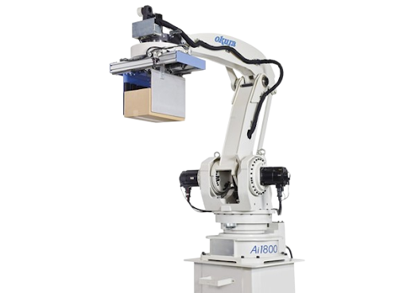

Robô Polar

O robô Polar, também chamado de esférico, foi um dos primeiros tipos de robô industrial desenvolvidos, combinando duas juntas rotativas com uma junta linear.
Conceito
O robô Polar utiliza um sistema de coordenadas esféricas (ou polares) para posicionar seu efetuador. Ele possui uma junta rotativa na base (como um giro de torre), uma junta rotativa no "ombro" e uma junta linear que estende ou retrai o braço, criando um envelope de trabalho em formato esférico. O Unimate, considerado o primeiro robô industrial da história, era um robô desse tipo.
Princípio de funcionamento
A base gira em torno de um eixo vertical, uma segunda junta rotativa inclina o braço para cima ou para baixo, e uma junta linear (prismática) estende ou recolhe o braço radialmente. A combinação dessas três articulações permite alcançar qualquer ponto dentro de uma "casca" esférica ao redor da base do robô.
Características técnicas
2 juntas rotativas + 1 junta linear (RRP)
Envelope de trabalho em formato esférico
Boa capacidade de carga para tarefas pesadas
Estrutura robusta, própria para ambientes exigentes
Tecnologia consolidada, uma das mais antigas da robótica industrial
Manutenção relativamente simples
Aplicações industriais
Soldagem a ponto em larga escala
Manuseio de materiais pesados
Pintura industrial de grandes peças
Alimentação de máquinas e prensas
Movimentação de peças em fundições
Empilhamento e carga de materiais
Integração com automação e IoT
Embora o robô Polar seja um dos modelos mais antigos, unidades modernizadas podem receber retrofit com sensores de posição, encoders e módulos de comunicação, permitindo sua integração a sistemas de supervisão SCADA e a redes industriais.
Essa modernização possibilita o acompanhamento remoto do estado do robô, alertas automáticos de manutenção e a inclusão desses equipamentos legados dentro de projetos de digitalização de fábricas (retrofit para Indústria 4.0).
Modelos comerciais
- Primeiro robô industrial fabricado no Japão
- Base para o desenvolvimento da robótica industrial japonesa
- Aplicado originalmente em soldagem automotiva
- Robô pioneiro, lançado nos anos 1960
- Referência histórica do sistema de coordenadas polares
- Base conceitual para os robôs industriais atuais
- Adaptação de robôs polares antigos com novos controladores
- Adição de sensores e módulos de comunicação
- Uso em plantas industriais que mantêm equipamentos legados